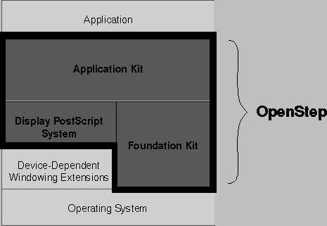

Introduction
This document describes the application programming interface (API) of OpenStep(TM) . OpenStep is an operating system independent, object-oriented application layer, based on NeXT's advanced object technology. OpenStep contains these major components:

Figure 1. Major Components of OpenStep
Application Kit The Application Kit(TM) provides the basic software for writing interactive applicationsapplications that use windows, draw on the screen, and respond to user actions on the keyboard and mouse. The Application Kit contains the components that define the OpenStep user interface.
Foundation Kit The Foundation Kit(TM) provides the fundamental building blocks that applications use to manage data and resources. It defines facilities for handling multibyte character sets, object persistency and distribution, and provides an interface to common operating system facilities.
Display PostScript System The Display PostScript(R) system provides OpenStep with its device-independent imaging model.
The OpenStep API is expressed in the Objective C language, an object-oriented extension of ANSI C. The language itself lies outside of the scope of this specification. For information on Objective C, see NEXTSTEP Object-Oriented Programming and the Objective C Language (Addison-Wesley Publishing Co., 1993). Please note that many of the types used for method argument and return values in the OpenStep specification are defined in the Objective C language. These include:
BOOL
Class
id
IMP
nil
Protocol
SEL
In addition, the type codes used to encode method argument and return types for archiving and other purposes are also defined in the Objective C language.
How this Document Is Organized
The three components of OpenStep are described in separate chapters of this document, starting with Chapter 1, The Application Kit. Each chapter is organized in the same way, having these standard sections:
Classes
This section lists the API for each class defined in the component. For each class, these subsections may appear:
Inherits From: The inheritance hierarchy for the class. For example:
NSPanel : NSWindow : NSResponder : NSObject
The first class listed (NSPanel, in this example) is the class's superclass. The last class listed is generally NSObject, the root of almost all OpenStep inheritance hierarchies. The classes between show the chain of inheritance from NSObject to the superclass. (This particular example shows the inheritance hierarchy for the NSMenu class of the Application Kit.)
Conforms To: The formal protocols that the class conforms to. These include both protocols the class adopts and those it inherits from other adopting classes. If inherited, the name of the adopting class in given in parentheses. For example:
NSCoding
NSCopying
NSMutableCopying
NSObject (NSObject)
(This particular example is from the NSArray class in the Foundation Kit.)
Declared In: The header file that declares the class interface. For example:
Foundation/NSString.h
(This example is from the NSString class.)
Next, the methods the class declares and implements are listed by name and grouped by type. For example, methods used to draw are listed separately from methods used to handle events. This listing includes all the methods declared in the class. It also may include a method declared in a protocol the class conforms to, if there is something extraordinary about the class's implementation of the method. Each method is accompanied by a brief description which states what the method does and mentions the arguments and return value, if any.
If a class lets you define another objecta delegatethat can intercede on behalf of instances of the class, the methods that the delegate can implement are described in a separate section. These are not methods defined in the class; rather, they're methods that you can define to respond to messages sent from instances of the class. In essence, this section documents an informal protocol. But because these methods are so closely tied to the behavior of a particular class, they're documented with the class rather than in the Protocols section.
Some class specifications have separate sections with titles such as Methods Implemented by the Superview, Methods Implemented by Observers, or Methods Implemented by the Owner. These are also informal protocols. They document methods that can or must be implemented to receive messages on behalf of instances of the class.
Protocols
The protocols section documents both formal and informal protocols. Formal protocols are those that are declared using the @protocol compiler directive. They can be formally adopted and implemented by a class and tested by sending an object a conformsToProtocol: message.
Some formal protocols are adopted and implemented by OpenStep classes. However, many formal protocols are declared by a kit, but not implemented by it. They list methods that you can implement to respond to kit-generated messages.
A few formal protocols are implemented by a kit, but not by a class that's part of the documented API. Rather, the protocol is implemented by an anonymous object that the kit supplies. The protocol lets you know what messages you can send to the object.
Like formal protocols, informal protocols declare a list of methods that others are invited to implement. If an informal protocol is closely associated with one particular classfor example, the list of methods implemented by the delegateit's documented in the class description. Informal protocols associated with more than one class, or not associated with any particular class, are documented with the formal protocols in this section.
Protocol information is organized into many of the same sections as described above for a class specification. But protocols are not classes and therefore differ somewhat in the kind of information provided. The sections of a protocol specification are shown in bold in the following:
Adopted By: A list of the OpenStep classes that adopt the protocol. Many protocols declare methods that applications must implement and so are not adopted by any OpenStep classes.
Some protocols are implemented by anonymous objects (instances of an unknown class); the protocol is the only information available about what messages the object can respond to. Protocols that have an implementation available through an anonymous object generally don't have to be reimplemented by other classes.
An informal protocol can't be formally adopted by a class and it can't formally incorporate another protocol. So its description begins with information about the category where it's declared:
Category Of: The class that the category belongs to. Informal protocols are typically declared as categories of the NSObject class. This gives them the widest possible scope.
All descriptions of protocols, whether formal or informal, list where the protocol is declared:
Declared In: The header file where the protocol is declared.
If the protocol includes enough methods to warrant it, they're divided by type and presented just as the methods of a class are.
Functions
Related functions are grouped together under a heading that describes the common purpose. Each function, its arguments, and its return value are briefly described in an accompanying comment.
Types and Constants
Related defined types, enumeration constants, symbolic constants, structures, and global variables are grouped together under a heading that describes the common purpose. A short description accompanies each group.